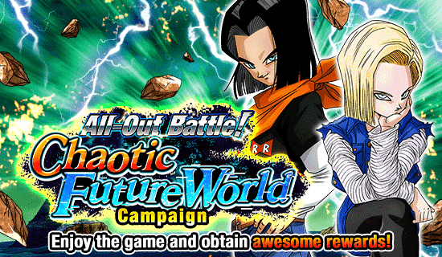
Que celebração foi essa??
Olha, aqui tiveram muitos lançamentos fortes, é bem impressionante, celebração muito boa
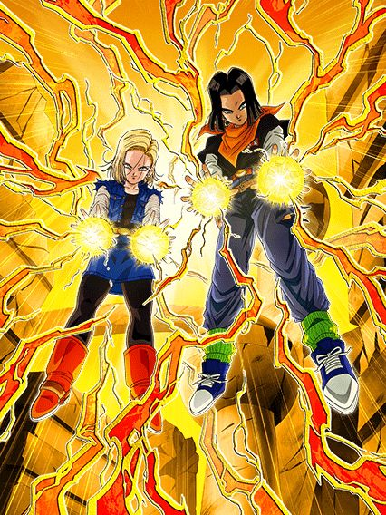
E simplesmente estavam no top 10.
Eu não sei quem teve a ideia dos androides do futuro serem um top 10 cards mais incríveis mas essa pessoa merece um aumento, esse card é insano
Eles tem 170% de ATK e 180% de DEF sendo UM CARD DE NUKE E ORB CHANGE
Só isso deixa eles bem desbalanceados já que ter algum stat no começo do turno +nukar é bem brabo, e é um valor bem alto, pegando orbs TEQ eles ganham 35% de ATK e DEF por orb, só 3 orbs já é MUITA COISA
Caso não peguem orbs TEQ ainda é até decente, 17% de ATK e 18% de DEF (eu gosto de como a defesa nesse card é sempre 1% maior q o ataque)
O maior objetivo é pegar 8 orbs com eles, já que com isso eles ganham em cima de tudo ainda 70% de ATK e 80% de DEF, se for calcular basicamente, eles com 8 orbs tão aumentando a DEF em 180% + 360%, ISSO com os 30% q eles ainda ganham no super attack, é muito número cara
Se a capacidade defensiva deles ainda não foi o bastante, eles ainda tem uma das habilidades mais quebradas de todas que é nulificar TODOS os supers de Ki do jogo, e é isso, 0 de dano sempre
Claro, isso tem uma condição de vida, mas uma condição bem humilde, acima de 35% de HP, e ainda, se estiverem abaixo de 35% eles ao invés da nulificação tem um super adicional garantido, só ajudando mais na defesa
Agora, a parte mais desbalanceada do card que já é desbalanceado: a active que faz o card atemporal, eles nunca vão perder o valor por essa active
A active simplesmente é um ghost usher grátis, sem nenhuma condição praticamente, vc literalmente pode ativar isso no turno 1 e só impedir o boss completamente de fazer qualquer coisa, quando que isso vai ser inútil? Nunca.
E o cara que fez o design deles precisa desse aumento, pq o cara pediu pra darem simplesmente uma das melhores osts desse jogo inteiro pra eles numa active onde nada acontece além de conversa
Contemple:
Eu tenho que admitir que amo o design desse card, queria muito que outros dokkan fests tivessem sido tão bons quanto eles foram.
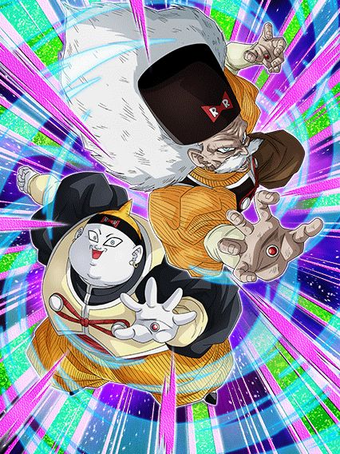
O suporte mais básico de androids:
Esses caras são muito insanos também, não só por eles serem o único suporte decente pra androids, mas tmb pela utilidade nas lutas
Diferente do 17 e 18, eles não nulificam supers de ki, e sim absorvem eles, transformando em vida grátis
E esse card linka 4/7 links com eles, ou seja, vc pode dar 40% de ATK e DEF grátis pra um card já muito forte, e assim vc tem 2 slots invencíveis contra supers de ki, e um deles ainda te cura gratuitamente, dá pra pedir um suporte melhor?
Por sinal, uma coisinha, caindo abaixo de 39% de HP vc tem um scouter tmb, então vc pode saber exatamente onde colocar esses caras e curar vida
No geral, belíssimo card.
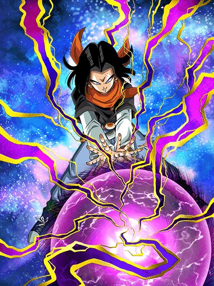 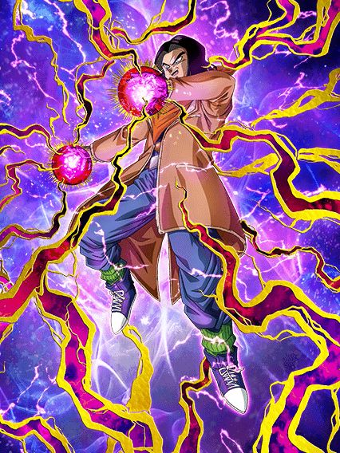
Eh.
Coloquei os dois juntos pq eles são literalmente o mesmo card, eles fazem a mesma coisa
Suporte de 25% de ATK e DEF x2, o 17 do inferno tem 290% de ATK e 240% de DEF e o 17 normal só inverte o ATK e a DEF, e é literalmente só isso
No geral os dois são bem meeehh por não terem nada de diferencial, além de serem uma cópia um do outro (é canon? É, MAS NÃO PRECISAVA TAR ASSIM AQUI)
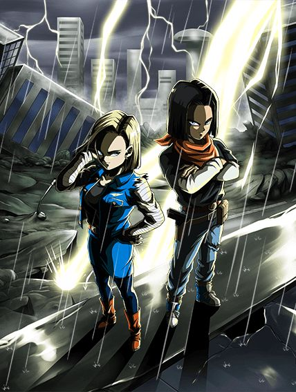
Pelo menos fazer o EZA deles não é tão chato quanto pegar as 385 medalhas pro LR deles.
Eles são bem simples mas o legal dele é eles serem um suporte de 50% de DEF pra Extreme Class, que é bem interessante
Por sinal eles precisam estar contra um inimigo Super Class, se não eles não dão dano nem tem Ki direito, mas fazer oq né, é um F2P
Fato interessante mas triste: Apesar de serem essencialmente os mesmos personagens que o 17 e 18 do futuro TEQ, eles estranhamente não linkam bem, oq não faz o menor sentido
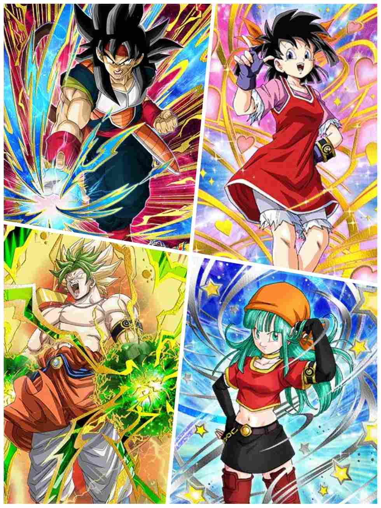
EZAs balanceados, 2 são mid e 2 são usáveis
O Karoly é um card que dá dano, e é só isso que ele faz
O Barlot é um orb changer e nuker que também só foca em dano, ok né
A Pandel é uma ótima suporte pra um time Fusion, já que ela dá 30% de ATK e DEF pra todos aliados e tem 49% de chance de desvio com um time inteiro Fusion, até que ela é bem usável
A Bulpan é um pouquinho pior, já que ela foca muito em dano e tem 50% de chance de ter defesa ativa, que é interessante mas fica nisso né, é um cara e coroa a cada turno
Ficou meio óbvio, mas é, a Pandel é a melhor desses 4 aí
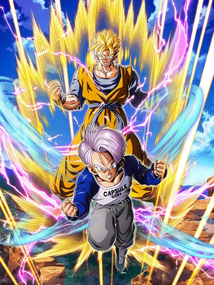
RAAAAHHHHH EU AMO ESSE CARD
Eles não são o MEU DEUS PERSONAGEM TOP 1 mas eu amo eles de qualquer jeito (e só deixando claro, eles tem uma base incrível pra um EZA daqui uns anos)
Bom, eles são um card orb changer que muda orbs aleatórios pra AGL, mas eles precisam dos próprios orbs, então é bom ficar ligado
Quando você pega 5 orbs, eles ganham mais DEF, 8% de chance de crítico e 8% de redução de dano, e caso os 5 orbs sejam AGL, eles ganham mais 8% de ambos crítico e redução de dano, além de mais ATK
E caso vc pegue 8 orbs, eles lançam um super attack adicional
Em geral, caso você pegue bastante orbs AGL, eles são decentes, já que 16% de redução de dano, mais defesa, mais crítico, mais dano.. até que é bem forte
Mas o grande diferencial desse card é a troca pro Gohan do futuro sozinho, que é bem fácil até de pegar
Ficando com menos de 58% de HP a partir do turno 3.. o guerreiro solitário aparece
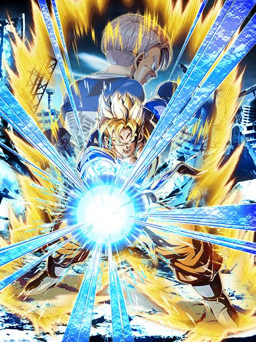
O card que transmite esperança.
Ok, vou ser bem direto
No momento em que você troca pro Gohan, seu objetivo principal é se matar.
...
Tá, melhor elaborar um pouco mais
Basicamente o gohan não tem defesa NENHUMA quando você troca pra ele, nada, absolutamente 0, a única coisa q ele tem é dano e um scouter que fica ativo enquanto seu HP estiver abaixo de 58%
Seu objetivo é jogar ele na frente do máximo de ataques possíveis ou do super attack pra ele morrer e reviver
Por sinal, que revive maravilloso, amo esse personagem.
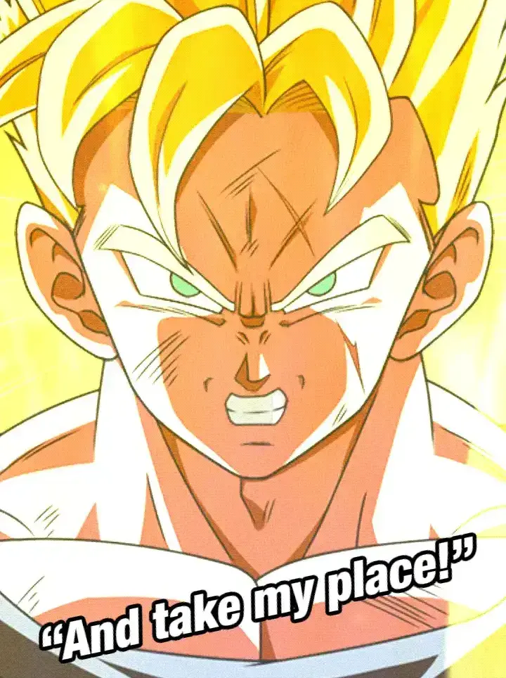
Pós revive o Gohan ganha 58% de DEF e 58% de redução de dano, e sim, isso não é o bastante pra tankar muita coisa, mas ele consegue ser competente até
Obviamente o foco desse card é o dano absurdo né, muito ATK, bastante Ki, lança um super adicional caso pegue 8 orbs (ele não tem mais o orb change então boa sorte)
Em geral, um card lindo com animações incríveis e uma OST que é uma das minhas favoritas.
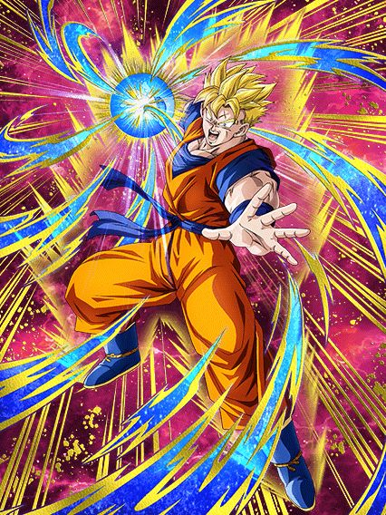
Por favor, tenha um Trunks do futuro no time.
O Gohan tem 158% de ATK e a defesa dele é certamente uma das defesas que existem, já que ela aumenta quando seu HP vai diminuindo
Tendo um Trunks do futuro no time, o gohan ganha 120% de ATK e DEF, ou seja, sem um Trunks e com 100% de HP, o Gohan simplemente não tem defesa
Uma coisa boa q o Gohan tem é 30% de redução de dano e ele ganha +7% a cada turno q passar até chegar em 28%
Em resumo, com um Trunks do futuro no time, você tem um card decente com 58% de redução de dano, e sem um Trunks, você essencialmente não tem um card.
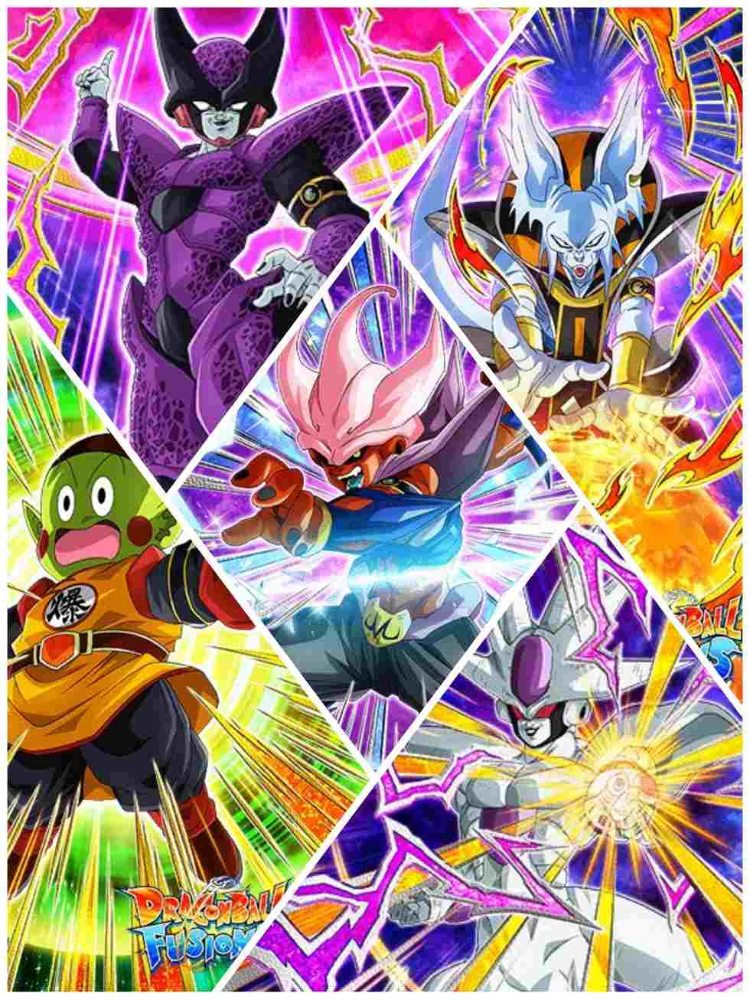
É, até que alguns deles são usáveis sim.
Pra começar, o Cellza é completamente inútil, ele cura HP mas é só isso, sem utilidade
O Chiaoman é um personagem meme engraçado, já que ele dá muito dano mas cada super attack arranca fora 10% de HP, realmente a melhor defesa é o ataque slk
O Whirus e Coolieza são ótimos suportes pros times deles, sendo o Whirus um duplo orb changer que até consegue ter 50% de chance de desvio caso vc pegue pelo menos 5 orbs com ele
O Coolieza stacka 50% de ATK e 20% de DEF no super attack e eu diria que isso é bem forte até, além de ele também dar suporte pro time
O Janembu é um goat em segredo, já que ele stacka 30% de DEF no super attack, tem 30% de chance de desviar e caso ele desvie 1 vez, ele ganha defesa ativa, que é uma mecânica bem forte
Não só isso, mas com essas habilidades defensivas ele ajuda muito o Kid Buu STR que vai vir mais tarde no global
E pra completar, ele ainda cura HP e debuffa o oponente, um verdadeiro card de ouro esse
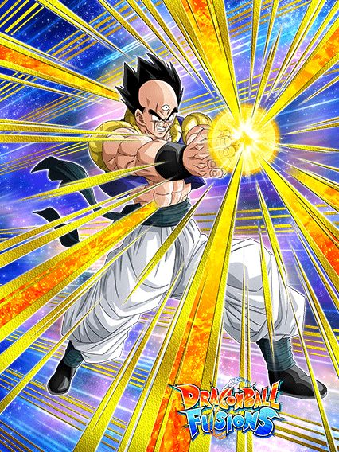
2 coisas:
1- Esse cara é literalmente o Yamcha calvo
2- O nome desse mano não era Tiencha?
Enfim, ele é um canhão de vidro, bastante dano mas pouca defesa
Caso você esteja abaixo de 80% de HP, ele tem 30% de chance de lançar um super attack adicional, e por um turno, mais 80% de ATK e 50% de chance de crítico, é basicamente isso
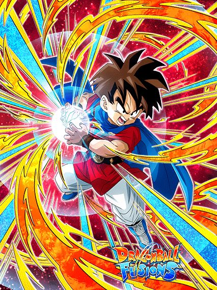 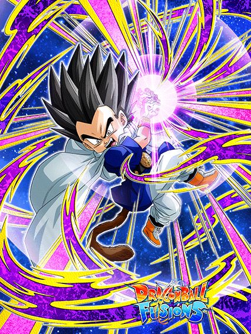
Eles tem suas funções no time mas não acabam sendo bons em nenhuma.
O Tekka é um suporte que pode ser até bem desbalanceado
Ele dá 25% de ATK e DEF pra aliados Crossover e tem 50% de chance de dar mais 25% de ATK e DEF pra todo mundo
É só isso mesmo, ele é um suporte
O Pinich é um card que dá dano e acabou, a passiva dele é só: "150% de ATK e DEF, mais 120% de ATK quando fizer um super e 30% de chance de dar um super adicional"
É só isso.
Preciso nem falar sobre qual dos dois é mais útil né?
Você chegou ao fim dessa página!
Obrigado por ler tudo, e fica a vontade pra ver outras